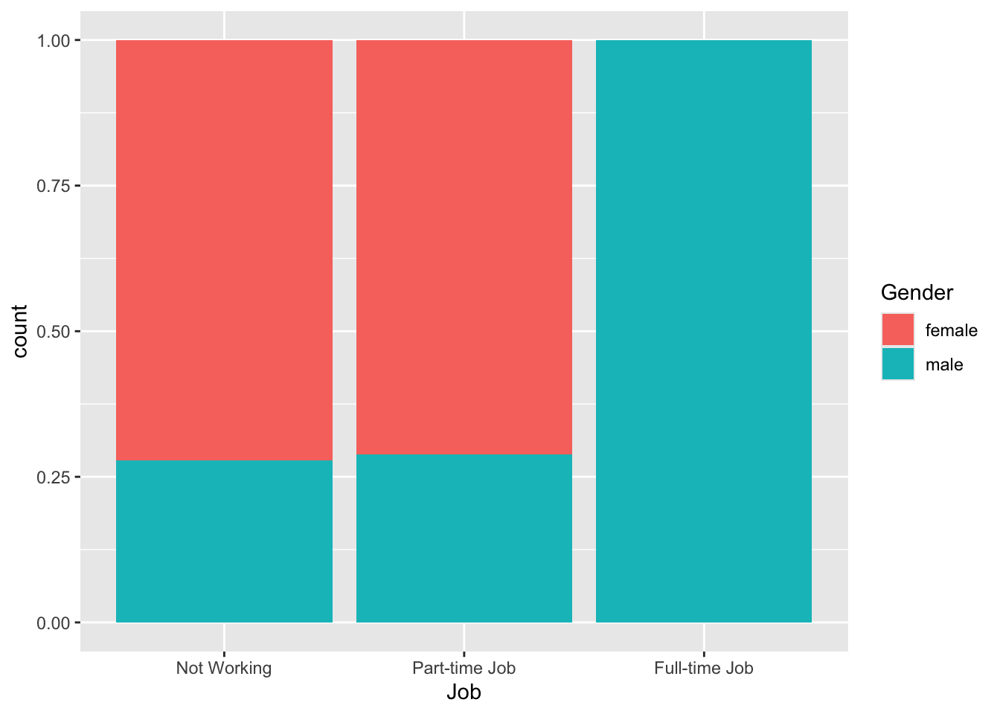
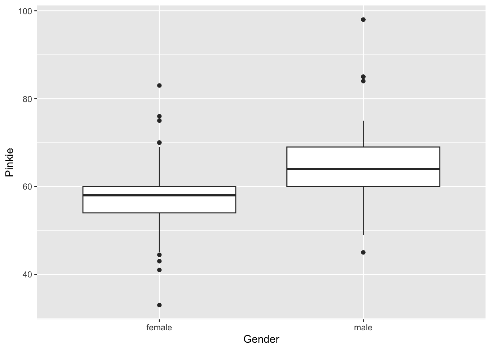
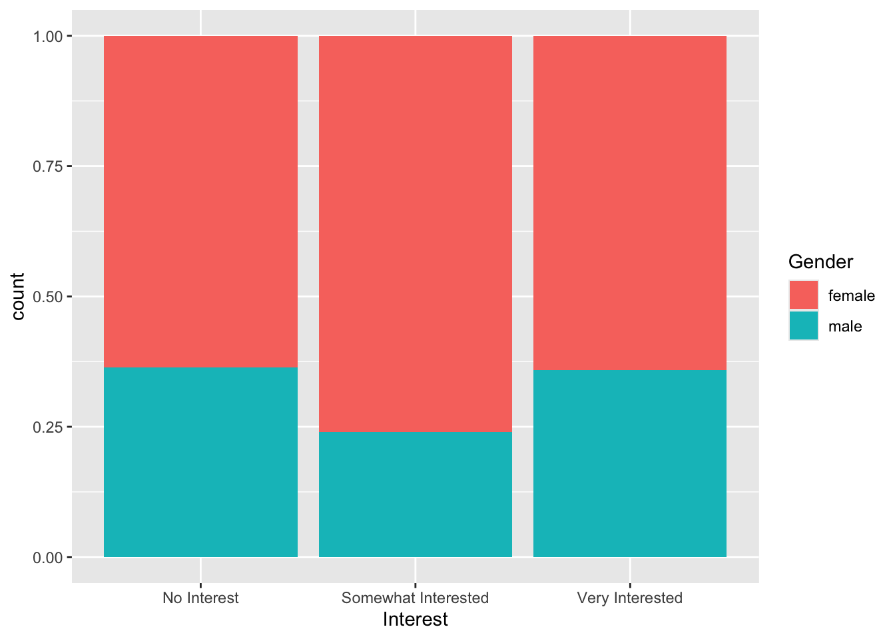

favstats(Fingers$Pinkie) min Q1 median Q3 max mean sd n missing
33 55 58 63 98 59.41252 9.080594 157 0~ and data= indicate? Offer a brief explanation.x <- c(2,1,3,3,2,3,1,2,1) is given.x, what pattern becomes visible?x show?Fingers dataset (from class):Index ~ Gender visually display about variability?gf_histogram(~Score, data = Data, binwidth = 2)Interpret what the following R code does and what you would expect the plot to show:
What distribution characteristics would the histogram reveal?
gf_histogram(~Index, data = Fingers, binwidth = 0.25)
gf_histogram(~Index, data = Fingers, binwidth = 0.5)Focus on how the choice of binwidth affects the appearance.
Index by two groups) show a large difference in medians but overlapping boxes? What does that say about variation within and between groups?favstats(Fingers$Pinkie) min Q1 median Q3 max mean sd n missing
33 55 58 63 98 59.41252 9.080594 157 0What can you say about the center and spread of the Score distribution?
Use 1.5IQR rule to find if there are any outliers.
mean(Pinkie ~ Gender, data = Fingers) # Returns means for Pinkie in different genders
gf_boxplot(Pinkie ~ Gender, data = Fingers)Explain what each line does and how the two results complement each other.
Pinkie using Gender, and why smaller residuals imply a better model.tally(Gender~Job, data=Fingers) Job
Gender Not Working Part-time Job Full-time Job
female 65 47 0
male 25 19 1Give an example of a conditional probability and compute it.
gf_bar(~Job, data = Fingers, fill = ~Gender, position = "fill")gf_bar(~Job, data = Fingers, fill = ~Gender, position = "fill")


Compare and contrast how these two visuals explain variability in the response variable. In your answer, mention: